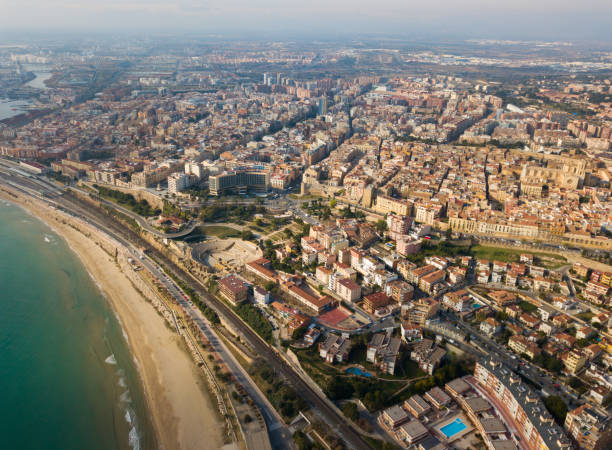

Tarragona
Espai web dedicat a el patrimoni i la historia de tarragona
Benvinguts a la nostra pàgina web dedicada a la rica història i patrimoni de Tarragona. Aquí, explorarem les diferents èpoques històriques de la ciutat, des de l'antiguitat fins als temps moderns, passant per l'edat mitjana i contemporània. A més, descobrirem alguns dels monuments més emblemàtics, com la Catedral de Tarragona, el Pont del Diable, l'Anfiteatre Romà i el Pretori.
Que es tarragona
Tarragona, situada a la costa mediterrània de Catalunya, és una ciutat amb un ric patrimoni històric que es remunta a l'època romana. La seva història és una crònica de conquestes, desenvolupament i transformacions que han deixat una empremta indestructible en la seva arquitectura i cultura. El seu llegat és tan valuós que la ciutat ha estat declarada Patrimoni de la Humanitat per la UNESCO.
Patrimoni de la humanitat
El patrimoni de Tarragona és una joia que ha resistit el pas del temps i les adversitats de la història. El seu ric llegat cultural, arquitectònic i històric és un testimoni de la grandesa de les civilitzacions que han habitat aquestes terres al llarg dels segles. Des de les muralles romanes fins als edificis modernistes, Tarragona és un museu a cel obert que ens transporta a èpoques passades i ens permet reviure la història en tota la seva esplendor.
En aquest espai web, us convidem a explorar el patrimoni i la història de Tarragona, a descobrir els seus secrets i a enamorar-vos de la seva bellesa. Us convidem a viatjar en el temps i a deixar-vos captivar per la màgia d'aquesta ciutat única i inigualable. Benvinguts a Tarragona, benvinguts a la història.
Ubicació
Tarragona es troba en la latitud 41º 0,5' nord i en la longitud 1º, 14' est, a la Mediterrània i al nord-est de la península Ibèrica. La superfície del municipi és de 65 kilòmetres quadrats i s'estén amb gairebé 14 km de litoral. L'altitud mitjana és d'uns 70 metres sobre el nivell del mar. La temperatura mitjana al llarg de l'any és molt suau i se situa al voltant dels 17º C.
Tarragona compta amb un conjunt artístic i monumental romà de primer ordre, declarat Patrimoni de la Humanitat l'any 2000. El festival de reconstrucció històrica Tàrraco Viva permet reviure aquella època cada primavera. El certamen és un només una de les moltes cites festives que periòdicament apleguen milers de persones, com la processó del Sant Enterrament, les festes de Santa Tecla o el Concurs de Castells.
Imatge des de dron amb una vista sobre la ciutat de Tarragona